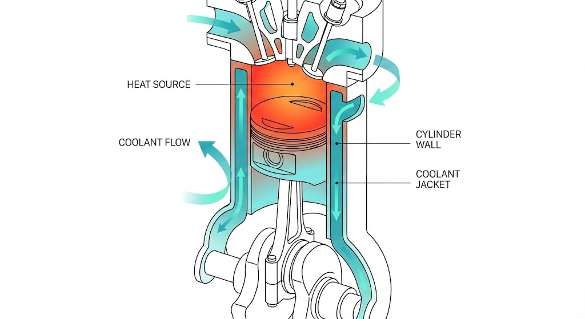

- Estabilidade Térmica
- Eficiência de Combustão
- Prevenção de 'Gripagem'

Porquê Arrefecer?
Manutenção Preventiva é Chave
Diagnóstico Preciso Poupa Custos
Fiabilidade do Motor
Obrigado pela vossa atenção!